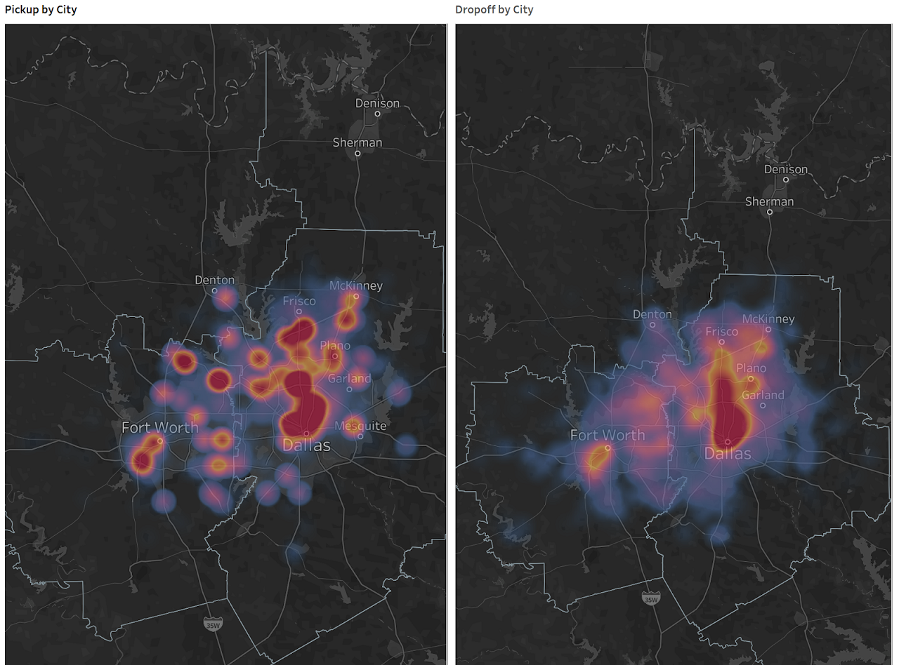

A local delivery company PICKUP is looking for expanding its business. We helped them predict and measure potential market performance and gave business recommendations.
We first built Heatmaps and the Sankey dashboard to have a better visual understanding of the business.
The Sankey diagrams are a type of flow diagram in which the width of the arrows is proportional to the flow rate. The illustration shows a Sankey diagram that represents all the markets flows into different ends.
When we click on one end, we can see how the data flow from all the markets to the end.
Next, we determine important variables for the business. After a couple of meetings with the clients, we came out with a standard and divided the existing markets into three levels: “Good”, “Middle”, and “Need Improved”. We also listed out variables from both Supply and Demand sides and collected public data on them.
We used Altryx to quickly prepare, blend, conform, and analyze data from different sources.
And then built dashboards for variables including population density, household income, truck population, and so on in Tableau to better compare across different markets.
The bars that lay in the area between the dash lines are preferred. High population density can come with traffic problems and low population density will lead to a lack of demand. So we want the population density to be in an optimal range.
This dashboard plots public data about the drive experience. On the left hand, the deeper the color is, the
better the driving experience is.
There also has a search bar on the top right side, the users can select an area to highlight.
We collect data from the US census and DMV and use different icons to present different variables.
We also created a weighted decision model and assigned a score to each market after applying it. We can see by looking at the final score dashboard, it’s easy to see which markets are more likely to perform well if we decide to launch.